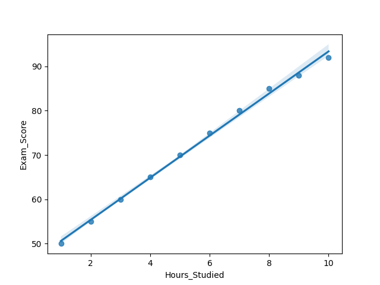
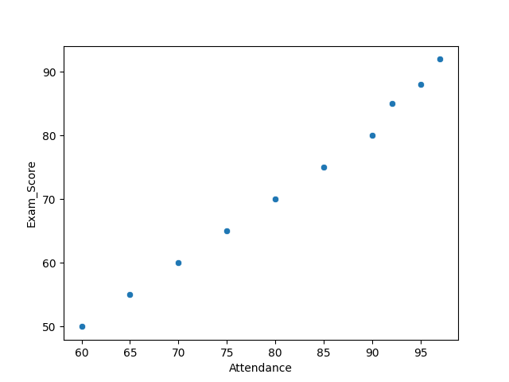
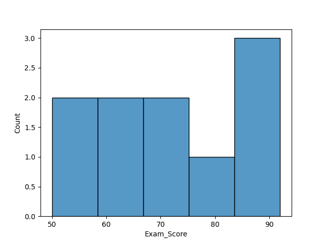
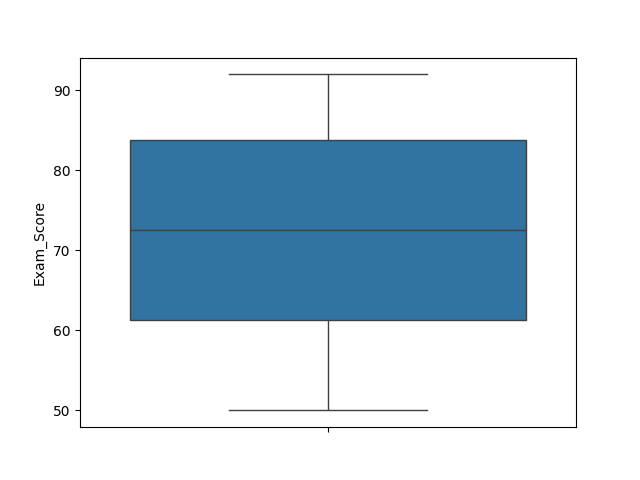

import marimo as mo
import pandas as pd
import matplotlib.pyplot as plt
import seaborn as sns
mo.md("""
# Sultan Al Ahmad
Aspiring Data Analyst | Python | Data Visualisation
""")
mo.md("""
## About Me
I am studying this data science module as an accounting and finance student with a strong interest in extracting insights from data. Throughout this module, I developed practical skills in analysing data, representing words in codes and visualising codes using Python.
I am particularly interested in using data to support decision-making and uncover patterns that are not immediately visible.
""")
mo.md("""
## Technical Skills
Languages: Python
Libraries: pandas, matplotlib, seaborn
Tools: marimo, GitHub
Core Skills:
- Data Cleaning & Generating Codes
- Exploratory Data Analysis
- Data Visualisation
- Statistical Thinking
## Project 1: Exploratory Data Analysis
Goal: To understand patterns and relationships within a dataset
Key Steps:
- Cleaned missing and inconsistent data
- Generated descriptive statistics
- Identified trends and correlations
Impact:
This assignment helped to strengthen my ability to take new data and transform it into meaningful insights.
## Project 2: Data Visualisation & Data Analysis
Goal: Clear communication using visual resources
Key Steps:
- I was able to create clear and ready to read charts
- Similarities and differences between variables visually
- Highlighted key points for interpretation
Impact:
Improved my ability to present data that is understandable for everyone.
## Key Insights
- Data cleaning is crucial before analysing it
- Visualising data makes it easier to interpret e.g by using graphs & charts
- Any types of datasets can reveal meaningful trends
## Learning Journey
Before this module, I had a lack of experience and knowledge with data analysis.
Also, I found it challenging to work with datasets and write structured Python code.
During the group assignments and this individual task, I was able to keep practicing, which boosted my confidence in:
- Writing clean and structured code
- Analysing datasets using pandas
- Creating effective visualisations
Moreover, I was able to open myself up to marimo notebooks to transform my analysis into an interactive webpage.
""")
# Simulated realistic dataset
data = {
"Hours_Studied": [1,2,3,4,5,6,7,8],
"Exam_Score": [50,55,60,65,70,78,85,90]
}
df = pd.DataFrame(data)
# Basic analysis
print(df.describe())
# Visualisation
plt.figure(figsize=(6,4))
sns.regplot(x="Hours_Studied", y="Exam_Score", data=df)
plt.title("Relationship Between Study Time and Exam Performance")
plt.xlabel("Hours Studied")
plt.ylabel("Exam Score")
plt.show()
Visualisation Results
Hours Studied vs Exam Score:

Attendance vs Exam Score:

Distribution of Exam Scores:

Exam Score Spread:

mo.md("""
## Insight From The Above Codes
This clearly shows a strong positive relationship between hours studied and exam scores.
This means that the more hours put into study time, the higher the exam scores, which suggests that there is a direct correlation between time put into studying and performance.
This type of analysis demonstrates how data can be used to support decision-making and identify trends.
""")
# Simulated realistic student dataset
data = {
"Hours_Studied": [1,2,3,4,5,6,7,8,9,10],
"Attendance": [60,65,70,75,80,85,90,92,95,97],
"Assignments": [2,3,4,5,6,7,8,9,9,10],
"Sleep_Hours": [8,7,7,6,6,6,5,5,5,4],
"Exam_Score": [50,55,60,65,70,75,80,85,88,92]
}
df = pd.DataFrame(data)
mo.md("""
## Dataset Overview
This dataset represents student behaviour.
""")
df.head()
mo.md("""
Variables include:
- Hours Studied
- Attendance
- Assignments Completed
- Sleep Hours
- Exam Score
The goal is to analyse how study habits influence academic results.
""")
df.head()
# DATA CLEANING
mo.md("""
## Data Cleaning
Checking for missing values ensures the dataset is reliable before analysis.
""")
df.isnull().sum()
# DESCRIPTIVE STATISTICS
mo.md("""
## Descriptive Statistics
Summary statistics help understand the distribution of the dataset.
""")
df.describe()
# VISUALISATION 1 - REGRESSION
mo.md("""
## Visualisation 1: Study Time vs Exam Score
This regression plot shows the relationship between hours studied and exam performance.
""")
plt.figure(figsize=(6,4))
sns.regplot(
x="Hours_Studied",
y="Exam_Score",
data=df
)
plt.title("Hours Studied vs Exam Score")
plt.show()
# VISUALISATION 2 - SCATTER
mo.md("""
## Visualisation 2: Attendance vs Exam Score
This scatter plot highlights how attendance influences exam performance.
""")
plt.figure(figsize=(6,4))
sns.scatterplot(
x="Attendance",
y="Exam_Score",
data=df
)
plt.title("Attendance vs Exam Score")
plt.show()
# VISUALISATION 3 - HISTOGRAM
mo.md("""
## Visualisation 3: Exam Score Distribution
This histogram shows how exam scores are distributed.
""")
plt.figure(figsize=(6,4))
sns.histplot(
df["Exam_Score"],
bins=5
)
plt.title("Distribution of Exam Scores")
plt.show()
# VISUALISATION 4 - BOX PLOT
mo.md("""
## Visualisation 4: Exam Score Spread
The box plot highlights variation and possible anomalies.
""")
plt.figure(figsize=(6,4))
sns.boxplot(
y=df["Exam_Score"]
)
plt.title("Exam Score Box Plot")
plt.show()
mo.md("""
## Contact Details
GitHub: https://github.com/s-up100
Email: sultan.al-ahmad@bayes.city.ac.uk
""")